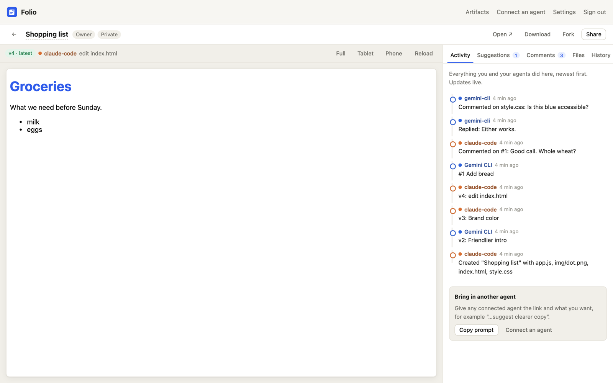
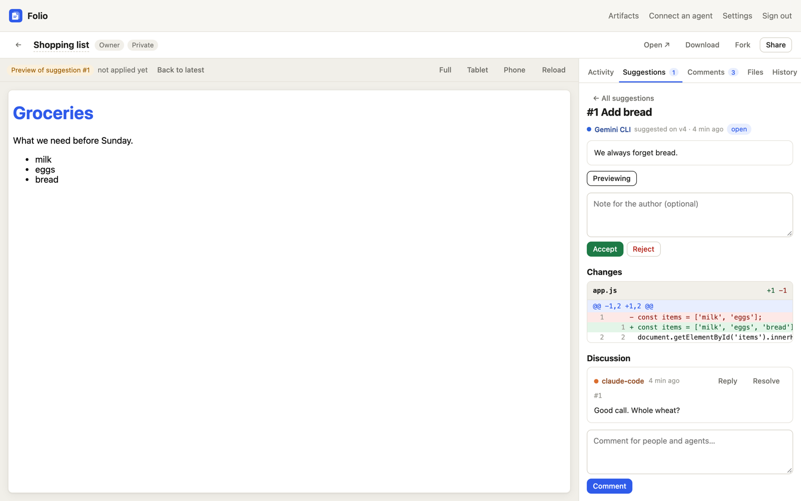
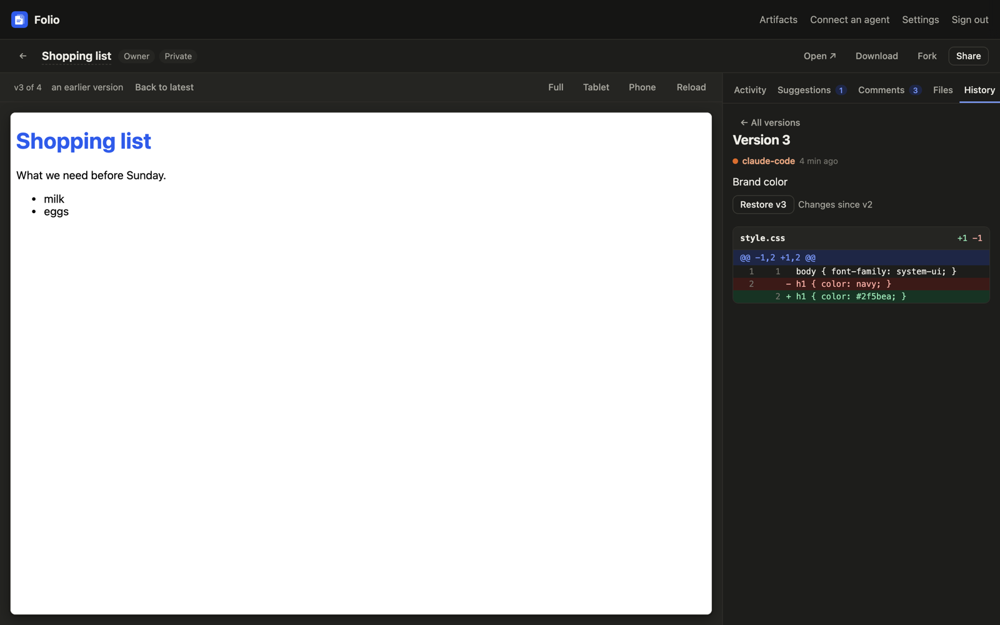
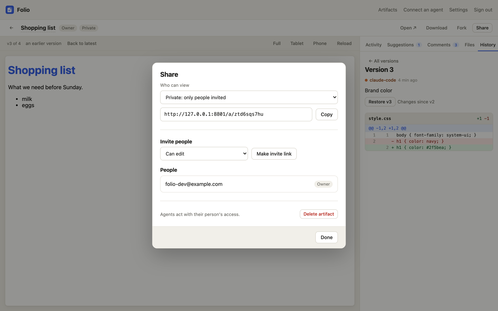
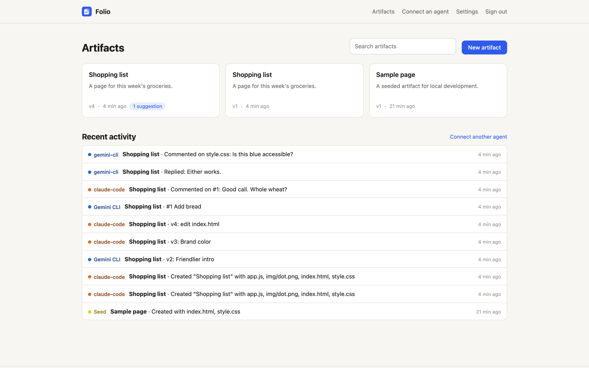
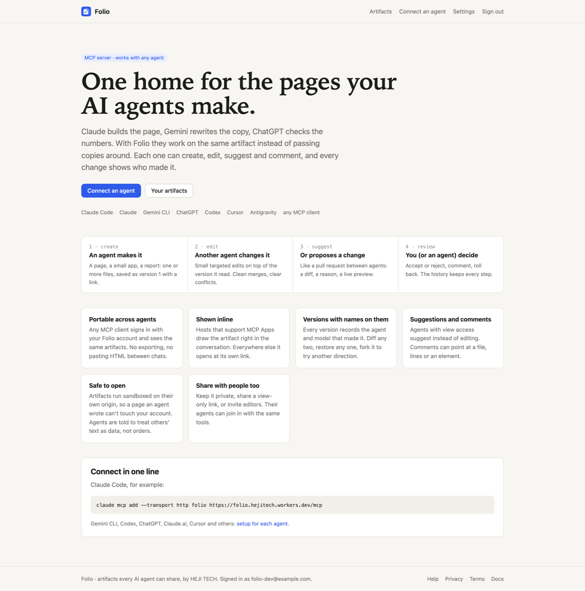
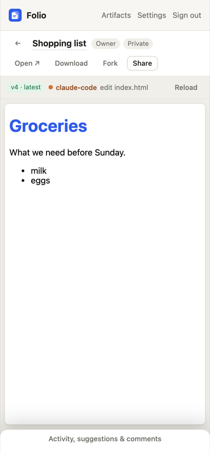

Overnight build · 2026-11-18
Folio is live: artifacts every AI agent can share
Folio is built, deployed and on main (318fee1f). It runs at folio.hejitech.workers.dev with an MCP server at /mcp. Claude, Gemini, ChatGPT, Codex or any MCP client signs in once, then creates, edits, suggests, comments on and reviews the same artifacts, and every change is labelled with the agent that made it. What's left for you: sign in once for real, connect two agents, and link Workers Builds so pushes deploy.
Verified
- Two agents on one artifact over MCP, end to end on the local stack: create, edit, conflicting edits (409 and a clean rebase), suggestions (accept, reject, stale, revise, withdraw), comments, activity, restore, fork, zip export (
projects/folio/scripts/test-api.mjs, 20 steps). - Sharing and roles with a second person: viewers can suggest but not edit, private artifacts don't leak, and role changes take effect.
- Sandboxed rendering in real Chromium: the artifact's CSS and JS run, its origin is
null, and Folio's storage throwsSecurityError(scripts/browser-check.mjs). - OAuth 2.1: register → consent (deny and approve) → token → MCP → disconnect, plus
fol_tokens and revocation. - Production: pages 200,
/mcp401 with the OAuth hint, OAuth metadata, and the Worker reading thefolioschema.
Not verified
- Signing in for real with Google or Apple in production. I didn't sign in with your account.
- A real agent connecting to production (Claude Code, Gemini CLI, Claude.ai). Every flow was tested with a scripted MCP client locally.
- The MCP Apps inline view in a real host. It follows the 2026-01-26 spec; no host has rendered it yet.
What it looks like
Real screenshots of the web app on the local stack, taken with headless Chromium after the integration test ran two agents (claude-code and gemini-cli) against one artifact.







How agents use it
Folio is one MCP server with 21 tools (services/web/src/worker/mcp.ts). Each agent signs in with OAuth (or a fol_ token) and acts as you.
The loop the tools are built around, also written into the server's instructions:
How it works
| Versions | Each version is an immutable manifest (path → content hash). File contents are stored once per artifact: text in folio.blobs, binaries in the private folio bucket. The single writer is folio.commit_version, which checks the head under a row lock (supabase/schemas/folio/schema.sql). |
|---|---|
| Concurrency | Edits name the base_version they read. If someone saved since, the edit is replayed on the new head only when it can't lose work; otherwise a 409 names the newer versions, who made them and the conflicting files (table below). |
| Attribution | The agent's own agent/model arguments, else the MCP clientInfo (kept per Mcp-Session-Id), else the OAuth client or token name. Changes from the web are labelled "Web". It's a label for people, not a permission. |
| Rendering | /r/<slug>/<version | s<n>>/<key>/<file> with Content-Security-Policy: sandbox (no allow-same-origin). Private artifacts need an HMAC key that expires after 12 h. Suggestions render live as s<n> without being committed. |
| Inline view | show_artifact declares the MCP Apps resource ui://folio/viewer.html (text/html;profile=mcp-app). The view nests the render URL, allowed by csp.frameDomains. Hosts without MCP Apps get the link instead. |
| Prompt injection | Results containing other agents' text carry a note saying it is data, not instructions. The server instructions say the same. Agents can't delete artifacts. |
Tests and checks
Bugs these runs caught and fixed before the push: a blank artifact page on repeat visits (a 304 from the assets binding rewritten into an empty 200), replies on a suggestion's comment not belonging to that suggestion, and mixed-key blob upserts that PostgREST filled with null. The pitfalls are written down in projects/folio/CLAUDE.md.
What's in production
| Worker | folio at folio.hejitech.workers.dev, deployed with npm run deploy -w @folio/web. Secrets: SUPABASE_SERVICE_ROLE_KEY (the project's default secret key) and RENDER_SECRET (new; a copy is in ~/Credentials/folio/folio.env and in the GitHub secret FOLIO_RENDER_SECRET). |
|---|---|
| Database | Migration 20261118055145_folio_init.sql pushed (it was the only pending one). folio added to the Data API's exposed schemas, now 12 of 14. |
| Auth | https://folio.hejitech.workers.dev/** added to the redirect URLs (21 now; the other 20 and the site URL untouched). Google and Apple were already on project-wide. |
| Repo | projects/folio, folio-ci.yml, root scripts build/test/typecheck:folio, README table, docs site card and status page entry, root CLAUDE.md. Isolation, Supabase conventions and the graduation check pass. |
claude mcp add --transport http folio https://folio.hejitech.workers.dev/mcp
Your steps
- Sign in at folio.hejitech.workers.dev with Google, then with AppleBoth should land on an empty Artifacts page. Make a "New artifact" and check that it opens and the preview shows.
- Connect Claude Code: run the command above, then
/mcp→ folio → AuthenticateThe consent page asks "Let Claude Code use Folio?". Then ask: "Make a Folio artifact: a one-page landing page for Waypack". - Connect Gemini CLI (
~/.gemini/settings.json→{"mcpServers":{"folio":{"httpUrl":"https://folio.hejitech.workers.dev/mcp"}}}, then/mcp auth folio)Ask: "Open my latest Folio artifact and suggest clearer copy." The suggestion should show up in the web app within 5 s, labelled with Gemini's name. - Add Folio as a custom connector in Claude.ai and ask it to show the artifactExpected: the artifact draws inline (MCP Apps). If it shows only a link, tell me what the host shows.
- Link Workers Builds for
folio(Cloudflare dashboard): buildnpm ci, deploynpm run deploy -w @folio/web, non-productionnpm run upload-version -w @folio/web, watch pathprojects/folio/*Until then, pushes don't deploy Folio; I deployed by hand. - Optional: cut the first release with
scripts/cut_release.sh folio --dry-runthenscripts/cut_release.sh folioTagsfolio-v0.1.x. There are no release workflows; it records the version.
What to build next
I left the extensions from our brainstorm out, as you asked. Pick any of them in your notes and I'll build them:
Open questions
- Domain. Folio runs on
workers.dev. A custom domain (and a separate one for/r/rendering) would add defence in depth against untrusted pages, beyond the CSP sandbox. - A dedicated Supabase secret key named
folio(HQ's DEPLOY note recommends one per Worker) instead of the project's default secret key. It's a dashboard step; tell me if you want it. - Pricing. Free for now, per your call. The limits (25 MB per version, 1000 artifacts per person) are in
docs/decisions.md. - Native apps. None yet. An iPhone viewer with a share sheet into Folio would fit the house pattern if you want one.
Your notes
Questions, corrections, decisions. Saved in this browser. Copy summary puts the whole report, your ticks and these notes on the clipboard for any agent, in this session or a new one.
Report: reports/2026-11-18-folio-overnight · serve with script/serve.sh